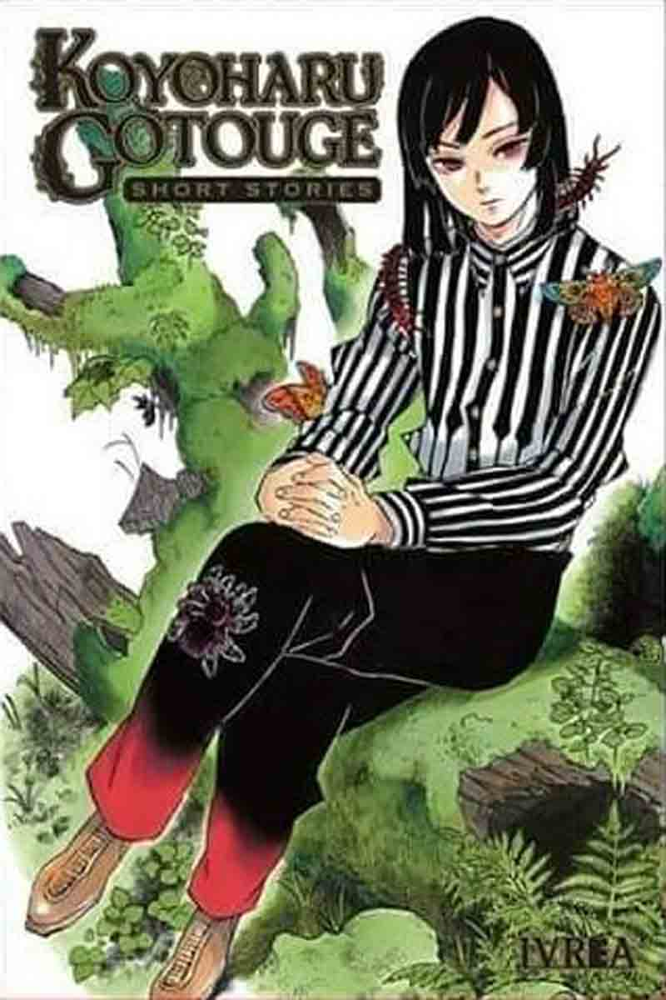

Destacado
Koyoharu Gotouge
Se conocen pocos detalles sobre la vida de la autora, más allá de que procede de la prefectura de Fukuoka. Aunque en sus páginas de presentación no hace mención a su género y solo utiliza pronombres neutros, se ha revelado por otras fuentes que Gotouge es una mujer.
Sepa más